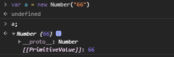
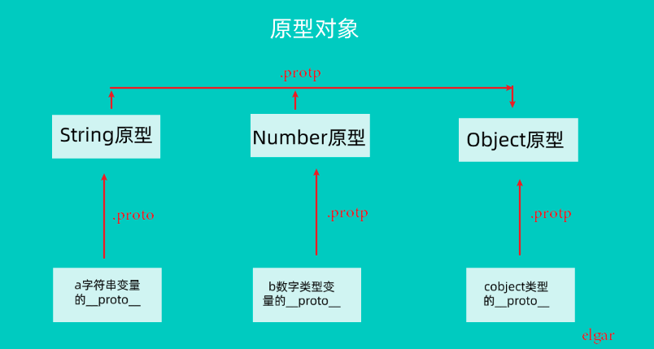

# JS数据类型
JavaScript中的数据分为原始值(栈)和引用值(堆)。
# １、基本类型(栈)
（1）number
（2）string
（3）boolean
（4）null(空)
（5）undefined(未定位))
# ２、引用类型(堆)
引用类型不能直接复制
（1） Object
（2）Array
（3）Date
...
TIP
{} 的 valueOf 结果为 {} ，toString 的结果为 "[object Object]"
[] 的 valueOf 结果为 [] ，toString 的结果为 ""
# 3、原始类型与引用类型的区别
最大的区别是基本类型赋值的时候传入实际的值，而引用类型传入地址。
// 基本类型
var num1 = 123;
var num2 = num1;
num1 = 345;
console.log(num1, num2) // 123 345
// 引用类型
var arr1 = [1,2,3];
var arr2 = arr1;
var arr1 = [3,4,5];
console.log(arr1) // [3,4,5]
console.log(arr1) // [3,4,5]
# 4、包装类
用 new 关键词创建的Number，Boolean，String
var num = new Number(123)
num.a = "Hi"
console.log(a.name) // Hi
这样创建的数组
var num = 123
num.a = "Hi"
// new Number(123).a = "Hi" delete
console.log(a.name) // undefined
使用new关键字创建一个对象是都会生成__proto__的属性，[[prototype]]的别名.

图上不难发现, __proto__指向Number.可以说Number时a变量的父母. 点开Numeber还有__proto__属性.指向了Object.Object没有原型对象.从而得知老祖宗就是Object

所以汇总一个了一个图中:

# 面试题-JS使用new 关键字的过程:
function Father(name) {
this.nane = name;
}
var son = new Father();
- 创建一个son对象
- 对象会执行原型链链接
son.__proto__ = Father.prototype this的绑定